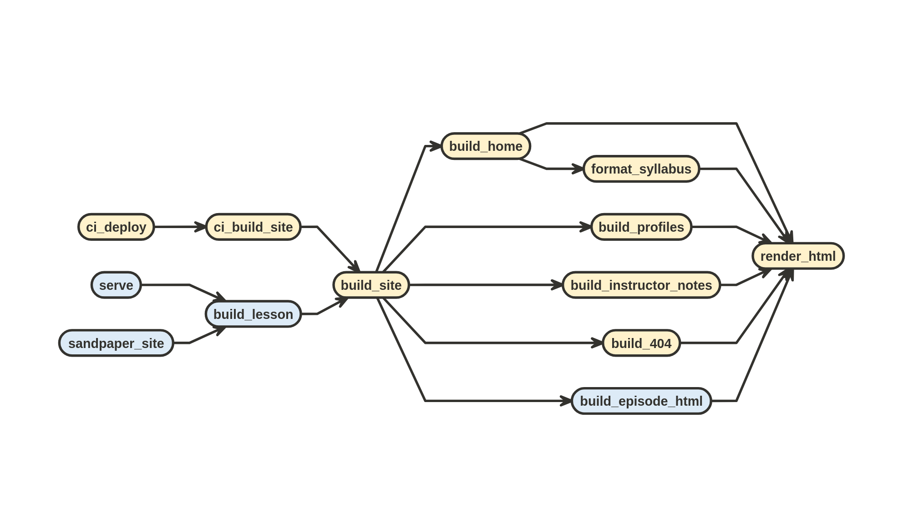
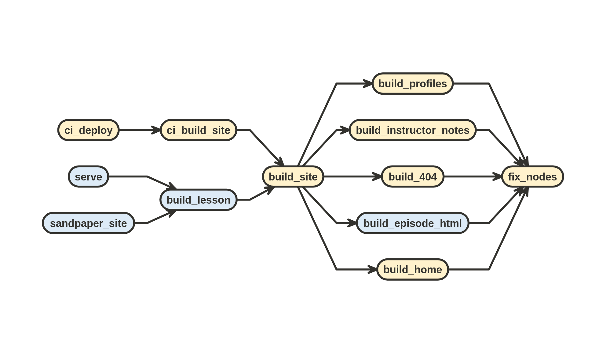
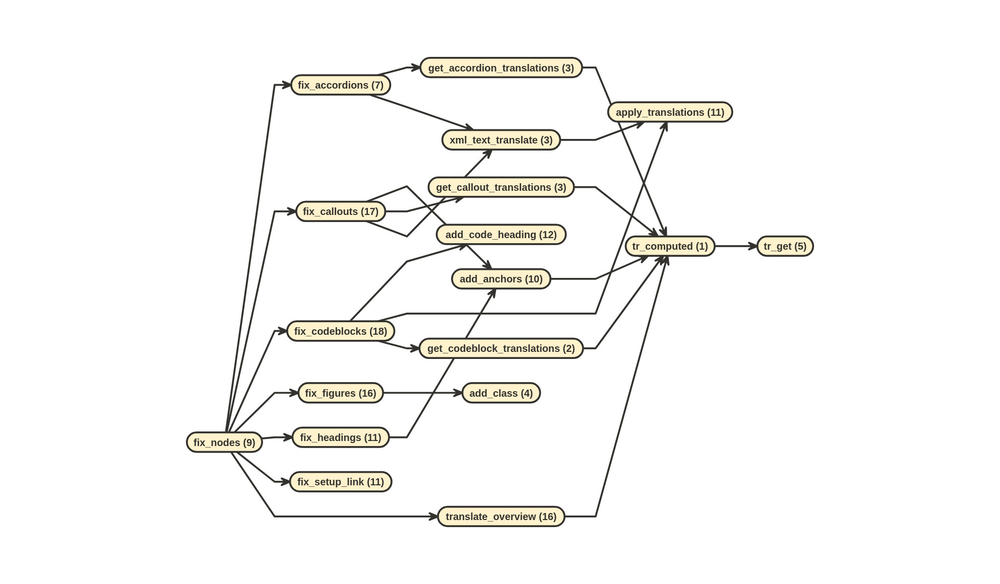
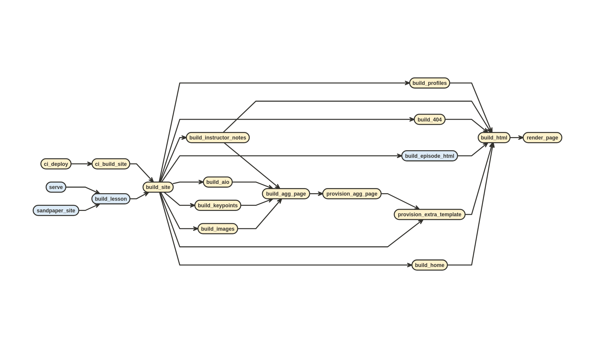

flowchart TB
IN["site/built/FILE.md"]
TMP["/tmp/tempfile.html"]
OUT[/"R Object"\]
pandoc{{"pandoc"}}
LUA["sandpaper/../lesson.lua"]
IN --> pandoc --> TMP
TMP -->|"readLines()"| OUT
LUA -->|"construct_pandoc_args()"| pandoc
9 Building HTML
9.1 Introduction
Building HTML in The Workbench is a process that is isolated from rendering R Markdown to Markdown. There are three general steps to building the HTML files:
- render the HTML using
pandocwith our custom lua filters (which transform our special fenced-divs and flattens relative links) - post-process the HTML using {xml2} to further refine and translate elements that we cannot achieve through Lua filters. It is here that we do things like adding heading anchors, removing instructor notes for learner view, etc.
- apply {varnish} templates by passing global variables and HTML to {pkgdown}. This is where the metadata and most of the translations are applied.
9.1.1 Page types in The Workbench
There are generally three kinds of pages that occur in The Workbench: single content pages where the HTML is directly generated from the Markdown, combined pages where two or more Markdown files contribute to the page content, and aggregate pages where the HTML is collected from specific sections of the single content pages after they have been rendered.
9.1.1.1 Single Content Pages
These pages are generated directly from Markdown content and are going to be in the episodes/, instructors/, and learners/ folders. There are special exceptions that are used for combined pages and aggregate pages.
9.1.1.2 Combined Pages
Combined pages are rendered to HTML and then concatenated together.
9.1.1.2.1 index.md and learners/setup.md
These form /index.html aka the home page where the sidebar shows the sections of the setup document.
| source | section | anchor |
|---|---|---|
index.md |
index | # |
learners/setup.md |
setup | #setup |
The instructor view is similar, except it includes a schedule before the setup:
| source | section | anchor |
|---|---|---|
index.md |
index | # |
episodes/* |
schedule | #schedule |
learners/setup.md |
setup | #setup |
9.1.1.2.2 profiles/*
All the profiles pages are concatenated into a single page called /profiles.html.
9.1.1.2.3 instructors/instructor-notes.md and episodes/*
The instructor notes (global and inline) are in a page called /instructor/instructor-notes.html The instructor notes are a special kind of combination that adds the in-line instructor notes to the end of the instructor-notes.md file. The in-line instructor notes start at the section with the anchor #aggregate-instructor-notes with subsections that have the anchor of the episode filenames.
9.1.1.3 Aggregate Pages
9.1.1.3.1 All in one page
This is at /aio.html and is a concatenation of the schedule. Each episode will be in a section with the ID aio-<file-slug>. An episode file named introduction.md will have the address /aio.html#aio-introduction in the aio page. Note: the aio prefix is to prevent a clash with the ID.
9.1.1.3.2 Keypoints
This is at /key-points.html. The key points of each episode is extracted and placed into sections with the ID of <file-slug>. An episode file name introduction.md will have the address /key-points.html#introduction.
9.1.1.3.3 Images
This is at /instructor/images.html and contains a concatenation of all the images in the lesson, printing the alt-text for each image if it exists.
9.2 Rendering HTML
The first step of the pipeline is to render the HTML from Markdown (in the site/built folder) using pandoc with our custom lua filters. This is entirely encapsulated within the function render_html():
render_html() is called by all of the pages which need to render content from markdown:

render_html() generates HTML from Markdown filesThe HTML that is rendered from render_html() is not standalone and expected to be insert into the <main> tags of HTML boilderplate. Luckily, render_html() is a standalone function. This means that you do not need to prepare anything other than a document for it to render. Here’s an example rendering basic Markdown to HTML as a character string. Let’s say we had a single markdown document that just showed:
I can write in **Markdown** and $\\LaTeX$ :joy_cat:When rendered, it would look like this:
I can write in Markdown and \(\\LaTeX\) 😹
To test the rendering, we can create a temporary file on the fly and use render_html() to render it.
tmp <- tempfile()
writeLines("I can write in **Markdown** and $\\LaTeX$ :joy_cat:", tmp)
html_text <- sandpaper:::render_html(tmp)The html_text variable contains a string of length 1 that contains the rendered HTML from the markdown.
<p>I can write in <strong>Markdown</strong> and <span
class="math inline">\(\LaTeX\)</span> <span class="emoji"
data-emoji="joy_cat">😹</span></p>9.2.1 Working with the Output
for all of the functions that use render_html() you will find this general pipeline: file_path |> render_html() |> xml2::read_html().
html_text <- render_html(file_path)
if (html_text == "") {
html <- xml2::read_html("<p></p>")
} else {
html <- xml2::read_html(html_text)
}You can then use it to explore and manipulate the elements using good ol’ XPath synatax 🤠Yee haw!
✋ Wait just a rootin’ tootin’ minute!
- 😩 We have HTML, why are we using XML to parse it?
- 🤠Well, pardner, just like cowpolk can rustle up cows, sheep, goats, and even cats, XPath is a language that can be used to rustle up ANY sort of pointy-syntax markup like HTML, XML, SVG, and even CSL.
- 😲 That’s a good point!
- 🤠Fastest pun in the West!
- 😉
print(html)## {html_document}
## <html>
## [1] <body><p>I can write in <strong>Markdown</strong> and <span class="math i ...xml2::xml_find_all(html, ".//p/strong")## {xml_nodeset (1)}
## [1] <strong>Markdown</strong>xml2::xml_find_all(html, ".//p/span[@class='emoji']")## {xml_nodeset (1)}
## [1] <span class="emoji" data-emoji="joy_cat">😹</span>The HTML can also be copied by converting it to a character and re-reading it as XML (yes, this is legitimately the fastest way to do this).
Note
See the {pegboard} intro to XML about the memory of XML objects for a reason why you want to copy XML documents this way.
html2 <- xml2::read_html(as.character(html))From here, the nodes get sent to fix_nodes() so that they can be post-processed.
9.3 Post-processing with XPath
Before the HTML can be passed to the template, it needs to be tweaked a bit. There are two reasons why we would need to tweak the HTML:
- We want to add a feature that is not supported in pandoc (or at least older versions)
- We need to structurally rearrange pandoc defaults to match our template
To do this, we read in the HTML with xml2::read_html() and then manipulate it using the sandpaper internal function fix_nodes(), which is called by the following functions:

fix_nodes() depends on build_site()In turn, fix_nodes() will call this cascade of XML manipulating functions:
sandpaper:::fix_nodesfunction (nodes = NULL)
{
if (length(nodes) == 0)
return(nodes)
translate_overview(nodes)
fix_headings(nodes)
fix_accordions(nodes)
fix_callouts(nodes)
fix_codeblocks(nodes)
fix_figures(nodes)
fix_setup_link(nodes)
}
<bytecode: 0x5639adb73698>
<environment: namespace:sandpaper>
fix_nodes()I will show the effects of each of these functions one by one, but first, here’s a couple of functions that will help me demonstrate so I don’t have to keep retyping an copying/pasting:
render_and_parse <- function(txt) {
tmp <- tempfile()
writeLines(txt, tmp)
return(xml2::read_html(sandpaper:::render_html(tmp)))
}
print_html <- function(html, xpath = ".//body/*") {
writeLines(as.character(xml2::xml_find_all(html, xpath)))
}9.3.1 translate_overview()
The Overview card is produced by the Lua filter, combining the objectives and questions fenced divs into one entity:
ovr <- "
::: objectives
- one
:::
::: questions
- one?
:::"
render_and_parse(ovr) |>
print_html()<div class="overview card">
<h2 class="card-header">Overview</h2>
<div class="row g-0">
<div class="col-md-4">
<div class="card-body">
<div class="inner">
<h3 class="card-title">Questions</h3>
<ul>
<li>one?</li>
</ul>
</div>
</div>
</div>
<div class="col-md-8">
<div class="card-body">
<div class="inner bordered">
<h3 class="card-title">Objectives</h3>
<ul>
<li>one</li>
</ul>
</div>
</div>
</div>
</div>
</div>The only purpose for translate_overview() is to translate the entities for this card into different languages, so if we use it in an English context, nothing happens, but if we use it in a Japanese context, the the translation appears:
withr::with_language("ja", {
render_and_parse(ovr) |>
sandpaper:::translate_overview() |>
print_html()
})<div class="overview card">
<h2 class="card-header">Overview</h2>
<div class="row g-0">
<div class="col-md-4">
<div class="card-body">
<div class="inner">
<h3 class="card-title">Questions</h3>
<ul>
<li>one?</li>
</ul>
</div>
</div>
</div>
<div class="col-md-8">
<div class="card-body">
<div class="inner bordered">
<h3 class="card-title">Objectives</h3>
<ul>
<li>one</li>
</ul>
</div>
</div>
</div>
</div>
</div>9.3.2 fix_headings()
Headings in The Workbench need a couple of things done:
- The parent div needs to be a
<section>tag - They need anchor links added to the headings (we took ours from {pkdown})
- The section element needed to be a
section-headingclass and there needed to be an<hr>element underneath the<h2>tags.
Behold!
heads <- "
## Heading 2 {#i-am-a-section-link}
### Heading 3
This is in a section, but it's not a section
## Heading 2
This is a new section
"
render_and_parse(heads) |> print_html()<div id="i-am-a-section-link" class="section level2">
<h2>Heading 2</h2>
<div id="heading-3" class="section level3">
<h3>Heading 3</h3>
<p>This is in a section, but it’s not a section</p>
</div>
</div>
<div id="heading-2" class="section level2">
<h2>Heading 2</h2>
<p>This is a new section</p>
</div>render_and_parse(heads) |> sandpaper:::fix_headings() |> print_html()<section id="i-am-a-section-link">
<h2 class="section-heading">Heading 2<a class="anchor" aria-label="anchor" href="#i-am-a-section-link"></a>
</h2>
<hr class="half-width">
<div id="heading-3" class="section level3">
<h3>Heading 3</h3>
<p>This is in a section, but it’s not a section</p>
</div>
</section>
<section id="heading-2">
<h2 class="section-heading">Heading 2<a class="anchor" aria-label="anchor" href="#heading-2"></a>
</h2>
<hr class="half-width">
<p>This is a new section</p>
</section>9.3.3 fix_accordions()
The only thing that happens with accordions is that they get translated:
accord <- "
::: instructor
drink water
:::
"
render_and_parse(accord) |> print_html(".//h3/text()")
Instructor Note
withr::with_language("ja", {
render_and_parse(accord) |>
sandpaper:::fix_accordions() |>
print_html(".//h3/text()")
})
Instructor Note9.3.4 fix_callouts()
Callouts need to have translations applied and ids adjusted:
keyps <- "
::: keypoints
- hydrate
:::"
render_and_parse(keyps) |> print_html()<div id="keypoints1" class="callout keypoints">
<div class="callout-square">
<i class="callout-icon" data-feather="key"></i>
</div>
<div class="section level3 callout-title callout-inner">
<h3 class="callout-title">Keypoints</h3>
<div class="callout-content">
<ul>
<li>hydrate</li>
</ul>
</div>
</div>
</div>render_and_parse(keyps) |> sandpaper:::fix_callouts() |> print_html()<div id="keypoints1" class="callout keypoints">
<div class="callout-square">
<i class="callout-icon" data-feather="key"></i>
</div>
<div class="callout-inner">
<h3 class="callout-title">Key Points<a class="anchor" aria-label="anchor" href="#keypoints1"></a>
</h3>
<div class="callout-content">
<ul>
<li>hydrate</li>
</ul>
</div>
</div>
</div>The translations are also applied:
withr::with_language("ja", {
render_and_parse(keyps) |>
sandpaper:::fix_callouts() |>
print_html(".//h3/text()")
})Key Points9.3.5 fix_codeblocks()
Codeblocks have a phantom H3 attached
codes <- "
```r
cat('mouse')
```"
render_and_parse(codes) |> print_html()<div class="sourceCode" id="cb1"><pre class="sourceCode r"><code class="sourceCode r"><span id="cb1-1"><a href="#cb1-1" aria-hidden="true" tabindex="-1"></a><span class="fu">cat</span>(<span class="st">'mouse'</span>)</span></code></pre></div>render_and_parse(codes) |> sandpaper:::fix_codeblocks() |> print_html()<div class="codewrapper sourceCode" id="cb1">
<h3 class="code-label">R<i aria-hidden="true" data-feather="chevron-left"></i><i aria-hidden="true" data-feather="chevron-right"></i>
</h3>
<pre class="sourceCode r" tabindex="0"><code class="sourceCode r"><span id="cb1-1"><a href="#cb1-1" aria-hidden="true" tabindex="-1"></a><span class="fu">cat</span>(<span class="st">'mouse'</span>)</span></code></pre>
</div>9.3.6 fix_figures()
Figures need semantic HTML <figure>, not <div> and lone images with no captions should still be figures.
figs <- "
{alt='tumbleweed'}
{alt='an empty icebox, plums gone'}
"
render_and_parse(figs) |> print_html()<p><img src="lone-img.png" alt="tumbleweed"></p>
<div class="figure">
<img src="papa-eating-plums.png" alt="an empty icebox, plums gone"><p class="caption">Just Sayin’, Breakfast Plums, So Cold</p>
</div>render_and_parse(figs) |> sandpaper:::fix_figures() |> print_html()<figure><img src="lone-img.png" alt="tumbleweed" class="figure mx-auto d-block"></figure>
<figure>
<img src="papa-eating-plums.png" alt="an empty icebox, plums gone" class="figure mx-auto d-block"><figcaption>Just Sayin’, Breakfast Plums, So Cold</figcaption>
</figure>9.3.7 fix_setup_link()
When someone writes the link to setup.html, it needs to be transmogrified to be index.html#setup
stp <- "
[setup](../learners/setup.html)
with [macOS](../learners/setup.html#macos)"
render_and_parse(stp) |> print_html()<p><a href="setup.html">setup</a></p>
<p>with <a href="setup.html#macos">macOS</a></p>render_and_parse(stp) |> sandpaper:::fix_setup_link() |> print_html()<p><a href="index.html#setup">setup</a></p>
<p>with <a href="index.html#macos">macOS</a></p>9.4 Applying {varnish} templating with pkgdown::render_page()
All HTML files get funneled into pkgdown::render_page() through build_html(), which in turn is ultimately called by build_site().
Want to change the HTML engine?
If we were to change the templating engine (e.g. Quarto, Hugo, or (ugh) Jekyll1), this is the place to change it. Of course, it will not be ‘easy’, but it will be possible.

pkgdown::render_page() is the last stop from build_site()What you can see from the diagram, this function is the last step in the line to generate a website. As mentioned earlier, this will apply {varnish} templates to the HTML generated by render_html() and modified by fix_nodes(). These templates contain mustache template variables that need to be filled in with variables passed through the data argument in pkgdown::render_page(). These variables are generated when build_lesson() is called and are derived from both the config.yaml and episode metadata. Thus, it is important to read the Data Flow from Source to Website vignette in {sandpaper} to understand how the flow works.
Actually, one of the strengths of Jekyll is its ability to template websites by stitching together HTML. Just please, never expect anyone else to be able to render markdown with it or build from it locally.↩︎